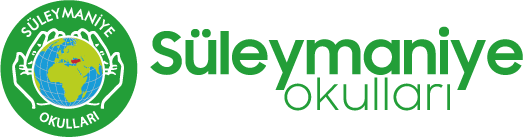

← Hikâye Seçimine Dön📚 Okuma Anlama Merkezi
🐦 Küçük Serçenin Büyük Yolculuğu
Değerler: merhamet, sorumluluk, bilinçli yardım
Türkçe seslendirme cihazınızın ses motorunu kullanır. Sessiz okuyarak da devam edebilirsiniz.

⏱ Sesli Oku, Hızını Ölç!
Başlat düğmesine bas, hikâyeyi sesli oku ve son kelimeyi okuduğunda Bitir düğmesine bas.
Metin: kelime · Süre: 00:00
Kasım ayının serin bir sabahında, Zeynep ve Emir okul bahçesindeki kuş yemliğini kontrol etmek için dışarı çıktı. Bahçenin köşesinden ince bir ötüş duyuldu. Çalıların yanında küçük bir serçe titriyordu. Serçenin kanadı incinmiş gibi görünüyordu.
Emir kuşu hemen eline almak istedi. Zeynep ise, “Önce öğretmenimize haber verelim. Ona zarar vermek istemeyiz,” dedi. İkisi acele etmeden Elif Öğretmen'i çağırdı. Öğretmen, serçeye dokunmadan uzaktan bakmalarını ve çevresini sakin tutmalarını söyledi.
Okulun görevlisi, öğretmenin yardımıyla bir veterinerden bilgi aldı. Çocuklar da serçenin bulunduğu yerin çevresinde koşup gürültü yapmamaya özen gösterdi. Veteriner geldiğinde serçeyi güvenli biçimde aldı ve kontrol edilmesi gerektiğini açıkladı.
Ertesi gün Elif Öğretmen sınıfa güzel bir haber verdi: Serçenin kanadı ciddi biçimde zarar görmemişti. Bir süre dinlendikten sonra doğaya dönebilecekti. Emir bu habere çok sevindi. “Demek ki yardım etmek, her zaman hemen dokunmak demek değilmiş,” dedi.
Bir hafta sonra çocuklar, serçenin yeniden uçabildiğini öğrendi. Zeynep, sınıf panosuna “Canlıları korumak için önce doğru davranışı öğren!” yazdı. O günden sonra arkadaşlarıyla kuş yemliğini düzenli kontrol ettiler ve hayvanlara saygılı davranmanın önemini hiç unutmadılar.
🧩 Anladığını Göster
İlk beş soru anlama, sonraki iki soru olay ve kavram eşleştirme, son soru çıkarım görevidir.